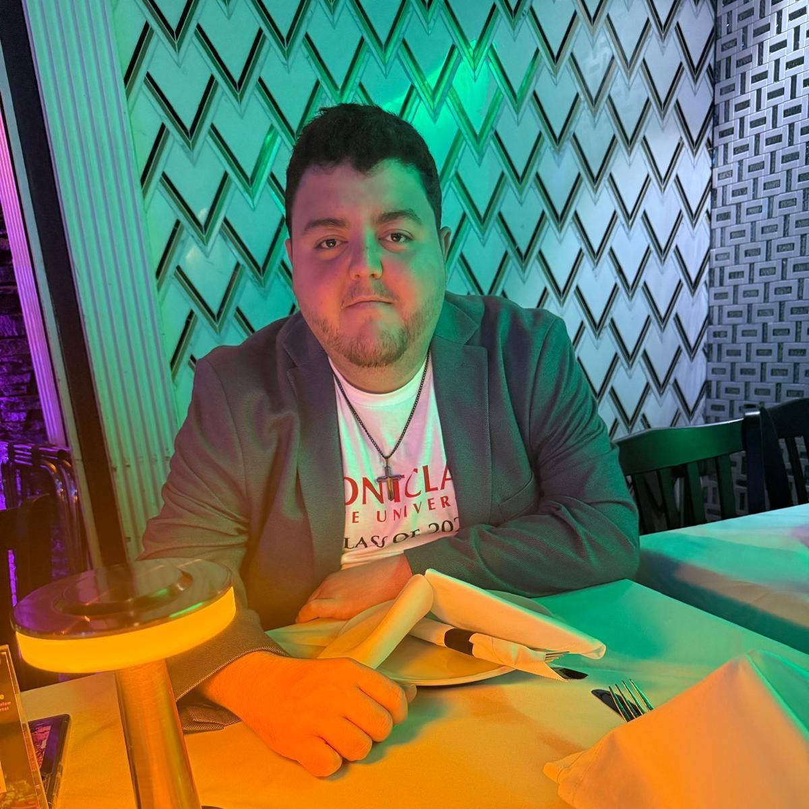

|  |
Wed Developer / Game Developer / Python Programmer |
About Me
Hello, my name is Farid Sawaqed, but you can call me Fred. I grew up loving mathematics and illustration and after |
Education
May 2025 |
Some of my work includes:
Game Development:Created multiple game projects across different platforms, including a Virtual Reality game using Unreal Engine(Blueprints, C++)as a group with me set as the leader, a 2D game in Unity(C#), and a 2D game in Godot(GDScript). Showed proficiency in game mechanics, level design, optimization, and leadership while utilizing each engine's unique features to create immersive and engaging experiences. UI Design:Designed a fully interactive mobile application prototype using Figma, incorporating user-centered design principles andproviding a seamless experience for mobile interfaces Web Development:Implemented several functioning projects, including but not limiting to a Dungeons and Dragon Character Initiative Tracker,2 fully functioning portfolio websites, one of which has a fully functioning in page contact feature. Python programming:Created fully functioning Emotion Recognition software using an Emotibit biographical data sensor as part of my Master's projectat Montclair State University. This project uses 18 different types of bio data from the Emotibit sensor to predict your emotions in real time, formatting these different emotions (neutral, happiness, sadness, anger, fear, disgust, surprise) in a csv file that updates in real time, as long as the project is running. |
Work Experience
Game Development Certificate Teaching Assistant
Graduate Research Assistant
|
| My Skills | Contact Me | My Socials |